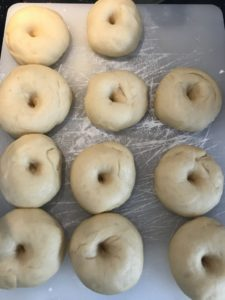

<?xml version="1.0" encoding="UTF-8"?><rss version="2.0"
	xmlns:content="http://purl.org/rss/1.0/modules/content/"
	xmlns:wfw="http://wellformedweb.org/CommentAPI/"
	xmlns:dc="http://purl.org/dc/elements/1.1/"
	xmlns:atom="http://www.w3.org/2005/Atom"
	xmlns:sy="http://purl.org/rss/1.0/modules/syndication/"
	xmlns:slash="http://purl.org/rss/1.0/modules/slash/"
	>

<channel>
	<title>Sweetness &#8211; Levia Wegner</title>
	<atom:link href="" rel="self" type="application/rss+xml" />
	<link>../../../index.html</link>
	<description>Baking &#38; Happiness</description>
	<lastBuildDate>Mon, 28 Oct 2024 11:18:11 +0000</lastBuildDate>
	<language>en-US</language>
	<sy:updatePeriod>
	hourly	</sy:updatePeriod>
	<sy:updateFrequency>
	1	</sy:updateFrequency>
	<generator>https://wordpress.org/?v=6.8.2</generator>

<image>
	<url>../../../wp-content/uploads/2021/06/Levia-L2-150x150.png</url>
	<title>Sweetness &#8211; Levia Wegner</title>
	<link>../../../index.html</link>
	<width>32</width>
	<height>32</height>
</image> 
	<item>
		<title>Caramel Decoration</title>
		<link>../../../caramel-decoration/index.html</link>
		
		<dc:creator><![CDATA[Levia Lydia Wegner]]></dc:creator>
		<pubDate>Mon, 28 Oct 2024 11:18:11 +0000</pubDate>
				<category><![CDATA[Decoration]]></category>
		<category><![CDATA[Sweetness]]></category>
		<category><![CDATA[Caramel]]></category>
		<guid isPermaLink="false">https://www.leviawegner.com/?p=1543</guid>

					<description><![CDATA[I give you the first in The Caramel Saga. A tale of triumphs and failures, testing and learning.]]></description>
										<content:encoded><![CDATA[<p>Caramel is a tricky treat that requires lots of precision and attention. Below, I recorded my process and notes on what to improve on next time.</p>
<h2>Recipe</h2>
<h3>Ingredients</h3>
<ul>
<li>200g sugar (100%)</li>
<li>optional nuts</li>
</ul>
<h3>Process</h3>
<ol>
<li>Prepare a baking sheet lined with parchment paper. In my case, I cut out little leaf shapes.</li>
<li>Heat the sugar in a pot at medium heat. It should reach a temperature between 160-177C.</li>
<li>It took 10 minutes for the sugar to start melting.</li>
<li>7 minutes later, the sugar completely melted and caramelized, ready to be poured out.</li>
<li>Using a pastry brush, I spread some of the caramel on the leaf shapes.</li>
<li>After the caramel has hardened, letting it drop onto the table made it break into pieces.</li>
</ol>
<h3>Notes</h3>
<p>First, make sure to spread caramel to get a thin surface. The small shards look like amber pieces and would look great as decoration.<br />
I should test dusting the caramel with starch or powdered sugar to reduce stickiness.<br />
Though a simple recipe and process, this one is a success.</p>
<p>Update:</p>
<p>I did try dusting the caramel with powdered sugar and it did help. Since I used caster sugar, the leaves had a pretty border, as can be seen in the image.</p>
<h3>Watch out! Sharp edges!</h3>
]]></content:encoded>
					
		
		
			</item>
		<item>
		<title>Carrot Cake</title>
		<link>../../../carrot-cake/index.html</link>
		
		<dc:creator><![CDATA[Levia Lydia Wegner]]></dc:creator>
		<pubDate>Sun, 26 Sep 2021 12:14:48 +0000</pubDate>
				<category><![CDATA[Baking Powder]]></category>
		<category><![CDATA[Cake]]></category>
		<category><![CDATA[Decoration]]></category>
		<category><![CDATA[Sweetness]]></category>
		<category><![CDATA[Asia]]></category>
		<category><![CDATA[Persia]]></category>
		<category><![CDATA[Sweet]]></category>
		<guid isPermaLink="false">https://www.leviawegner.com/?p=1196</guid>

					<description><![CDATA[Autumn, harvest, fall. Whatever you call it, it means apples, cinnamon, carrots and other distinct flavours. What better way to celebrate this season than a carrot cake?]]></description>
										<content:encoded><![CDATA[<p>Carrot cake as we know it today is believed to be from <strong>Persia</strong>, however using carrots in a cake was no unusual practice. Around the 15th century, sugar was scarce and expensive. Not many people could afford to buy and much less use large amounts of sugar. That is when carrots came in. The roots have a sweetness to them that could replace the sugar in the cake. Of course, nowadays we don&#8217;t have to rely on the sweetness of the root, but it still adds a nice flavour to the cake.</p>
<h2>Ingredients</h2>
<p>Cake base:</p>
<ul>
<li>400g Carrots</li>
<li>85g Crunchy Almonds</li>
<li>100g Flaked Almonds</li>
<li>200g Flour</li>
<li>1tsp Baking Powder</li>
<li>1 pinch Salt</li>
<li>4 Eggs</li>
<li>250g Sugar</li>
<li>100ml Sunflower Oil</li>
<li>5Tbsp Orange Juice</li>
<li>Butter for greasing</li>
</ul>
<p>Topping and decoration:</p>
<ul>
<li>200g Powdered Sugar</li>
<li>5 Tbsp Orange Juice</li>
<li>60g Fondant</li>
<li>Yellow, Red and Blue Food colouring</li>
</ul>
<h2>Instructions</h2>
<ol>
<li>Wash the carrots, cut their ends and grate them.</li>
<li>Add the almonds to the carrots.</li>
<li>Mix the baking powder and salt into the flour.</li>
<li>Pour the flour into the carrot almond mixture and stir well until the carrots are well coated.</li>
<li>Set the mixture aside and preheat the oven to 160ºC.</li>
<li>Separate the egg yolk from the whites.</li>
<li>Mix the oil, juice and sugar into the egg yolks.</li>
<li>Beat the egg whites until stiff.</li>
<li>Add the egg yolk mixture to the carrots stir well.</li>
<li>Fold in the egg whites.</li>
<li>Pour the batter into a greased cake pan.</li>
<li>Bake the cake for 50-55 minutes or until a toothpick comes out clean.</li>
</ol>
<p>Decoration and Topping</p>
<ol>
<li>While the cake is in the oven, prepare the decoration.</li>
<li>Separate 40g of fondant from the 60g and add yellow and red until obtaining the desired orange colour.</li>
<li>Add blue and yellow to the remaining 20g. Mix well until the fondant is the correct green colour.</li>
<li>Roll out the fondant. Fold the orange one in half.</li>
<li>Cut six pieces off the orange fondant.</li>
<li>Roll out the green fondant and cut thin strips from it.</li>
<li>Cut triangles into the green fondant and roll it up.</li>
<li>Shape the orange fondant into little carrots and cut thin lines into them.</li>
<li>Wet the base of the leaves and the top of the carrots and put them together. (notes)</li>
<li>Take the cake out of the oven and let it cool.</li>
<li>Mix the juice into the powdered sugar until well integrated.</li>
<li>Let the mixture thicken for a bit before pouring it over the cake.</li>
<li>Place the six carrots on the cake distributed evenly.</li>
<li>Serve and enjoy!</li>
</ol>
<h2>Notes</h2>
<p>Fondant: If the fondant gets too sticky when shaping it, wet it with a bit of water and sprinkle some powdered sugar.</p>
]]></content:encoded>
					
		
		
			</item>
		<item>
		<title>Dutch Baby Pancakes</title>
		<link>../../../dutch-baby-pancakes/index.html</link>
		
		<dc:creator><![CDATA[Levia Lydia Wegner]]></dc:creator>
		<pubDate>Sat, 04 Sep 2021 14:56:32 +0000</pubDate>
				<category><![CDATA[Breakfast]]></category>
		<category><![CDATA[Sweetness]]></category>
		<category><![CDATA[North America]]></category>
		<category><![CDATA[Sweet]]></category>
		<category><![CDATA[USA]]></category>
		<guid isPermaLink="false">https://www.leviawegner.com/?p=1141</guid>

					<description><![CDATA[Looking for new ideas to try for breakfast? This is a delicious treat that will be loved by all. With infinite filling options, this is a recipe for everyone.]]></description>
										<content:encoded><![CDATA[<p>Dutch Baby Pancakes originated in the <strong>USA</strong>, Seattle to be precise. They are derived from the german &#8220;pfannkuchen&#8221;. The batter is almost identical, but the method of preparation is different. Funny how changing only a few steps in the recipe can change the outcome so drastically. You can fill the pancake with anything you desire. Be it yogurt, fruits, pudding or just powdered sugar. So, whether it is a dessert or a breakfast dish, this is the recipe for you.</p>
<h2>Recipe</h2>
<h3>Ingredients</h3>
<ul>
<li>
<div class="ingredient">45g Butter</div>
</li>
<li>
<div class="ingredient">60g Flour</div>
</li>
<li>
<div class="ingredient">3 Tbsp Sugar</div>
</li>
<li>
<div class="ingredient">1/2 tsp Salt</div>
</li>
<li>
<div class="ingredient">125ml Milk</div>
</li>
<li>
<div class="ingredient">2 large Eggs</div>
</li>
</ul>
<p>Fillings (optional)</p>
<ul>
<li>Yogurt</li>
<li>Berries</li>
<li>Fruit</li>
<li>Powdered Sugar</li>
<li>Jam</li>
</ul>
<h3>Instructions</h3>
<ol>
<li>Preheat the oven to 190ºC.</li>
<li>Melt the butter and place 30ml in a large frying pan.</li>
<li>Let the rest of the butter cool for 10 minutes.</li>
<li>Fill all the ingredients in a food processor and blend well.</li>
<li>Pour the batter into the frying pan.</li>
<li>Bake for 30-35 minutes or until the edges are puffed.</li>
<li>Choose the filling you like best and enjoy!</li>
</ol>
<p>&nbsp;</p>
]]></content:encoded>
					
		
		
			</item>
		<item>
		<title>Palatschinken</title>
		<link>../../../palatschinken/index.html</link>
		
		<dc:creator><![CDATA[Levia Lydia Wegner]]></dc:creator>
		<pubDate>Fri, 03 Sep 2021 16:31:45 +0000</pubDate>
				<category><![CDATA[Breakfast]]></category>
		<category><![CDATA[Sweetness]]></category>
		<category><![CDATA[Austria]]></category>
		<category><![CDATA[Europe]]></category>
		<category><![CDATA[Sweet]]></category>
		<guid isPermaLink="false">https://www.leviawegner.com/?p=1045</guid>

					<description><![CDATA[Here's a breakfast idea you are going to absolutely love. This common european dish is amazing for your own breakfast. Imagine placing a stack of these delicious treats on the table. ]]></description>
										<content:encoded><![CDATA[<p>This dish is native to <strong>Austria</strong> and Bavaria. But it has a long history. This dish is popular in many European countries. Czech palačinke, Hungarian palacsinta, Romanian placinta. They don&#8217;t only share similar names, they are also a similar dish. They are made up of a thin pancake, rolled up and filled with jam.</p>
<h2>Recipe</h2>
<h3>Ingredients</h3>
<ul>
<li>250g Flour</li>
<li>2 Eggs</li>
<li>1/2l Milk</li>
<li>1 pinch Salt</li>
<li>Oil for the pan</li>
</ul>
<p>Filling/ Topping</p>
<ul>
<li>Jam (filling) (notes)</li>
<li>Powdered Sugar (dusting)</li>
</ul>
<h3>Instructions</h3>
<ol>
<li>Pour all the ingredients in a large mixing bowl.</li>
<li>Mix well with an electric mixer until there are no clumps left in the batter.</li>
<li>Heat the oil in a pan.</li>
<li>Pour two solid spoonfuls into the pan and cook on low heat.</li>
<li>Wait until the top of the pancake is close to solid before flipping it.</li>
<li>When it is finished, place it on a large plate.</li>
<li>Spread jam on one side of the pancake.</li>
<li>Roll the pancake up from the side with the jam on it.</li>
<li>Stack the palatschinken and dust with powdered sugar.</li>
<li>Serve and enjoy!</li>
</ol>
<h3>Notes</h3>
<p>Jam: You can use any jam you like. If you are not a great fan of jam, you can also use other spreads.</p>
]]></content:encoded>
					
		
		
			</item>
		<item>
		<title>Pistachio Cheesecake</title>
		<link>../../../pistachio-cheesecake/index.html</link>
		
		<dc:creator><![CDATA[Levia Lydia Wegner]]></dc:creator>
		<pubDate>Tue, 31 Aug 2021 14:17:37 +0000</pubDate>
				<category><![CDATA[Sweetness]]></category>
		<guid isPermaLink="false">https://www.leviawegner.com/?p=1001</guid>

					<description><![CDATA[If you are looking for a cheesecake, this one might just be the one for you. It is extremely delicious and rich. Perfect for a cozy family dinner. ]]></description>
										<content:encoded><![CDATA[<p>Cheesecake is originally of greek origin, however this particular cheesecake is based on Italian cream cheese as well as yogurt. This cheesecake can probably be traced to the <strong>USA</strong> because of its dense and heavy texture. Usually, you can distinguish cheesecake by the taste. German cheesecake is usually made with quark cheese and not too sweet, rather sour, while American cheesecake is much sweeter and creamier. Japanese cheesecakes mostly don&#8217;t even have a base. You can therefore determiner the origins of a cheesecake using your very own tastebuds. So try this one out and discover it yourself.</p>
<h2>Rezept</h2>
<h3>Ingredients</h3>
<p>Cake base</p>
<ul>
<li>100g White Chocolate</li>
<li>200g Marie Biscuits</li>
<li>50g Butter</li>
</ul>
<p>Cake</p>
<ul>
<li>500g Mascarpone</li>
<li>200g Yogurt</li>
<li>3 Eggs</li>
<li>100g Sugar</li>
<li>5g dried Lemon Zest</li>
</ul>
<p>Decoration</p>
<ul>
<li>50g Shelled Pistachios (chopped)</li>
</ul>
<h3>Instructions</h3>
<ol>
<li>Place the biscuits in a ziplock bag and use a dough roll to crumble them.</li>
<li>Melt the chocolate in a water-bath and once it is almost melted, add in the butter.</li>
<li>Mix the melted ingredients into the biscuit crumps.</li>
<li>Put the base into a greased cake tray and press it down to make sure it is solid.</li>
<li>Leave the base to cool for 20 minutes in the fridge.</li>
<li>Use an electric mixer to mix the mascarpone until it is soft.</li>
<li>Mix in the yogurt.</li>
<li>Beat the eggs and mix them into the mascarpone.</li>
<li>Add in the sugar and lemon zest.</li>
<li>Preheat the oven to 150ºC.</li>
<li>Pour the mixture onto the cake base.</li>
<li>Bake for 50 minutes.</li>
<li>Cool the cake for up to 4 hours or more.</li>
<li>Sprinkle with pistachios and enjoy!</li>
</ol>
<h3>Notes/ Variations</h3>
<p>Pistachios: If you are not a fan of pistachios, feel free to leave them out.</p>
]]></content:encoded>
					
		
		
			</item>
		<item>
		<title>Profiterole</title>
		<link>../../../profiterole/index.html</link>
		
		<dc:creator><![CDATA[Levia Lydia Wegner]]></dc:creator>
		<pubDate>Tue, 31 Aug 2021 09:53:47 +0000</pubDate>
				<category><![CDATA[Sweetness]]></category>
		<category><![CDATA[Europe]]></category>
		<category><![CDATA[France]]></category>
		<category><![CDATA[Sweet]]></category>
		<guid isPermaLink="false">https://www.leviawegner.com/?p=992</guid>

					<description><![CDATA[Everyone has heard of this pastry, but many people are scared off by the paper thin outside. Trust me, it is not too difficult and you can definitely pull it off. So give it a try!]]></description>
										<content:encoded><![CDATA[<p>This well known pastry was first made by a chef of Catherine Medici of Florence who was Italian but moved to <strong>France</strong> in the year 1540. The dough was first called pâté a Pantanelli or Pantarelli after the chef himself. The pastry evolved and he now used name, choux pastry was given due to it&#8217;s unusual shape after being baked. &#8216;Choux&#8217; is french for cabbage. The dough used for Profiterole can also be used to make other choux pastries such as eclairs. Don&#8217;t be scared off, try it yourself!</p>
<h2>Rezept</h2>
<h3>Ingredients</h3>
<p>Choux Pastry (notes)</p>
<ul>
<li>100g Butter</li>
<li>240g Water</li>
<li>140g Flour</li>
<li>4 Eggs</li>
</ul>
<p>Filling</p>
<ul>
<li>Vanilla Ice-cream</li>
<li>Vanilla Custard</li>
<li>Whipped Cream</li>
</ul>
<p>Chocolate Sauce</p>
<ul>
<li>250g dark Chocolate</li>
<li>240ml Heavy Cream</li>
</ul>
<h3>Instructions</h3>
<ol>
<li>Simmer the butter until it is almost melted, then pour in the water.</li>
<li>Mix in the flour and simmer for a minutes before removing it from the heat.</li>
<li>Mix well until the dough resembles that in the picture below.</li>
</ol>
<p><a href="../../../wp-content/uploads/2021/08/Dough.jpg"></a></p>
<ol start="4">
<li>Let it cool for 10 minutes.</li>
<li>Add in the eggs one at a time and mix thoroughly until the eggs are well incorporated.</li>
<li>Fill the dough into a piping bag with a round nozzle.</li>
<li>Cover a baking tray with baking paper. You can use butter to stick it down so it won&#8217;t curl.</li>
<li>Preheat the oven to 200ºC fan.</li>
<li>Pipe 2cm wide circles onto the paper. Pipe on the same spot without moving the nozzle.</li>
<li>Place the tray in the oven for 15 minutes.</li>
<li>Take the tray out and prick the pastries with a sharp knife.</li>
<li>Place the tray back in the oven for another 5-7 minutes.</li>
<li>Leave the shells to cool while you prepare your filling.</li>
<li>Once the shells are cool, fill them with whatever filling you choose.</li>
<li>Melt the chocolate on low heat in a water-bath.</li>
<li>Mix the heavy cream into the chocolate.</li>
<li>Pour the sauce over the profiteroles.</li>
<li>If you want, you can dip them in chocolate instead. You can then dip them in chia seeds like in the picture below.</li>
</ol>
<p></p>
<h3>Notes</h3>
<p class="p1">Choux pastry: This pastry looks quite tricky and it is definitely a step up from your average lemon loaf or banana bread. Profiterole are not too hard to make, though. There is not as much that can go wrong. It is actually fun to make.<span class="Apple-converted-space"> </span></p>
]]></content:encoded>
					
		
		
			</item>
		<item>
		<title>Sufganiyot</title>
		<link>../../../sufganiyot/index.html</link>
		
		<dc:creator><![CDATA[Levia Lydia Wegner]]></dc:creator>
		<pubDate>Mon, 30 Aug 2021 15:14:54 +0000</pubDate>
				<category><![CDATA[Sweetness]]></category>
		<category><![CDATA[Yeast Dough]]></category>
		<category><![CDATA[Asia]]></category>
		<category><![CDATA[Israel]]></category>
		<category><![CDATA[Sweet]]></category>
		<guid isPermaLink="false">https://www.leviawegner.com/?p=988</guid>

					<description><![CDATA[Sufganiyot or Sufganiyah (plural) are a delicious dessert that will have everyone's mouth watering. I can assure you, these will fill every little kid's "dessert stomach". Because we all know how much children pride themselves on always having space for sweets.]]></description>
										<content:encoded><![CDATA[<p>These jelly doughnuts are typical in <strong>Israel</strong>, however similar ones can be found across cultures. The german <em>Berliner</em> or the Spanish and Latin American <em>Buñuelos</em>. The Israeli version is actually derived from the german Berliner which used to be filled with meat rather than jams and jellies. It is only later that these yeast dough doughnuts were filled with jelly and covered with icing sugar. They taste absolutely amazing I can assure you. But, don&#8217;t take my word for it. Try it yourself!</p>
<h2>Recipe</h2>
<h3>Ingredients</h3>
<ul>
<li>50g Sugar</li>
<li>350g Flour</li>
<li>2 Eggs</li>
<li>25g Butter</li>
<li>1/2 tsp Nutmeg</li>
<li>2 tsp Salt</li>
<li>1 package Fresh Yeast (notes)</li>
<li>180ml Water</li>
<li>Oil for frying</li>
<li>A glass of strawberry or raspberry jam</li>
<li>60g Icing Sugar</li>
</ul>
<h3>Instructions</h3>
<ol>
<li>Heat the water until it is lukewarm.</li>
<li>Mix one teaspoon of the sugar into the water before crumbling the yeast into the water.</li>
<li>Set the yeast aside for 5 to 10 minutes to proof it. (notes)</li>
<li>Sift the sugar, flour, nutmeg and salt into a bowl.</li>
<li>Rub the butter into the dry ingredients.</li>
<li>Crack the eggs into the dry ingredients and pour in the yeast mixture.</li>
<li>Use a fork to mix everything together until the consistency is sticky enough to knead by hand.</li>
<li>When the dough is smooth, continue kneading it on a floured surface.</li>
<li>Leave the dough to rise for half and hour or until it is double its size.</li>
<li>Roll the dough out and use a round cookie cutter to cut out the doughnuts.</li>
<li>Don&#8217;t mix and roll the dough out too many times or it will get tough.</li>
<li>Leave the doughnuts to rise for another 15 minutes.</li>
<li>Heat the oil.</li>
<li>Fry the doughnuts from both sides until they are golden-brown.</li>
<li>Fill the jam into a piping bag with, preferably, a long nozzle.</li>
<li>Use the piping bag to fill the sufganiyah with whatever jam you like best.</li>
<li>Sift the icing sugar over the sufagniyah and they are ready to serve and enjoy.</li>
</ol>
<h3>Notes</h3>
<p class="p1">Fresh Yeast: When using fresh yeast, the package usually specifies the yeast to flour ratio. It can be different for different brands of yeast. The yeast I usually use comes in packages of 25g and is used for 500g of flour. If you prefer to use active dry yeast, check the back of the package. I usually use two packages of active dry yeast instead of one package of fresh yeast.</p>
<p class="p1">Deep Frying: You do not need any special equipment for deep drying. It is possible to just use a large pot filled with enough oil so the pastry is floating. You will be needing a ladle to pick the pastry out of the pot. The oil can be filtered after letting it cooled down. I usually use a coffee filter and store my oil in a closed bottle to later reuse when frying.</p>
<p class="p1">Yeast: First of all make sure the water is not too hot. It should not be burning. It should be merely warm not hot. If your yeast mixture is not puffy after you let it proof for five minutes, try leaving it for another five. If it still isn&#8217;t puffy, do not continue with that mixture!!! It will take less time to redo the yeast mixture and get it right than it will to remake the entire dough because it didn&#8217;t rise. Yeast is a tricky ingredient to work with and much can go wrong. This is a way of catching any mistakes early on and sparing yourself a lot of work.</p>
]]></content:encoded>
					
		
		
			</item>
		<item>
		<title>Coffee Cake</title>
		<link>../../../coffee-cake/index.html</link>
		
		<dc:creator><![CDATA[Levia Lydia Wegner]]></dc:creator>
		<pubDate>Mon, 30 Aug 2021 13:34:21 +0000</pubDate>
				<category><![CDATA[Baking Powder]]></category>
		<category><![CDATA[Cake]]></category>
		<category><![CDATA[Sweetness]]></category>
		<category><![CDATA[Europe]]></category>
		<category><![CDATA[Italy]]></category>
		<category><![CDATA[Sweet]]></category>
		<guid isPermaLink="false">https://www.leviawegner.com/?p=974</guid>

					<description><![CDATA[If you are looking for a trickier cake, something to really try your hand at baking and decorating, this is the cake for you. It is also extremely delicious and beautiful to look at. So why not give it a go?]]></description>
										<content:encoded><![CDATA[<p>Coffee Cake is believed to first have been made in Germany, however, this one is made with a mascarpone cream, making it attributable to <strong>Italy</strong>. Coffee cake wasn&#8217;t really invented, it was derived from other cakes. Mascarpone is originally from Italy and even got nominated the P.A.T. (Prodotto agroalimentare tradizionale or &#8220;traditional regional food product&#8221;) by the Italian government. This cake is made with a soft biscuit cake base and coffee flavoured mascarpone cream. It tastes similar to Tiramisu but is slightly heavier. It can be enjoyed whenever though it is best served cold so the cream doesn&#8217;t melt.</p>
<h2>Recipe</h2>
<h3>Ingredients</h3>
<p>Biscuit Cake (notes)</p>
<ul>
<li>6 Eggs</li>
<li>100g Flour</li>
<li>120g Cornstarch</li>
<li>200g Sugar</li>
<li>4Tbsp hot Water</li>
<li>1 1/2 Tbsp Instant Coffee</li>
</ul>
<p>For the soaking</p>
<ul>
<li>A cup of cold black coffee (notes)</li>
</ul>
<p>Mascarpone cream</p>
<ul>
<li>500g Mascarpone</li>
<li>800g Heavy cream</li>
<li>4Tbsp Icing Sugar</li>
<li>4tsp Instant Coffee</li>
<li>2Tbsp hot Water</li>
</ul>
<h3>Instructions</h3>
<ol>
<li>Beat the eggs until they have become fluffy.</li>
<li>Sift in the cornstarch, flour and sugar.</li>
<li>Make sure to mix well with an electric mixer to avoid clumps.</li>
<li>Integrate the instant coffee into the hot water before adding it into the batter.</li>
<li>Preheat the oven to 180ºC</li>
<li>But baking paper into a cake form and butter it.</li>
<li>Fill batter into the cake form.</li>
<li>Bake the cake for 30 minutes or until a toothpick stuck in the <strong>middle</strong> comes out clean.</li>
<li>Once the cake is done, take it out of the oven and use a long bread knife to cut it into three layers.</li>
<li>Leave the layers to cool while you prepare the mascarpone cream.</li>
<li>Use an electric mixer to mix the mascarpone and the heavy cream together.</li>
<li>Sift the icing sugar into the cream and mix well.</li>
<li>Separate the cream in two.</li>
<li>Mix the coffee into one of the halves.</li>
<li>Put the cream into the fridge for 30 minutes or until it is solid enough to be piped.</li>
<li>Place the cream into a piping bag with a round nozzle.</li>
<li>Use a baking brush to soak the cake base with the black coffee.</li>
<li>Pipe circles or spirals in both colours on the cake.Cool the cream before decorating the cake.</li>
</ol>
<p></p>
<ol start="19">
<li>Place the creams into piping bags with star nozzles and pipe the decorations.</li>
<li>Pipe the top in circles changing the colours.</li>
<li>For the side, start piping from the bottom and pull the piping bag up without lifting the bag to form the pattern of the white cream in the image below.</li>
</ol>
<p></p>
<ol start="22">
<li>Place the cake in the fridge for several hours or until serving.</li>
</ol>
<h3>Notes</h3>
<p>Biscuit cake: This is a tricky type of cake. It is easy to get something wrong. In fact, I have had huge trouble with it before. Sometimes it is not completely done in the middle. So make sure to do the toothpick trial exactly in the centre and don&#8217;t take the cake out too soon. If you take it out and put it back in too many times, it will collapse and become dry. Make sure the eggs are correctly beaten so you get the right texture. It should be fluffy on the inside.</p>
<p>Coffee: There is a distinct difference in the taste of instant coffee versus a good blend. This coffee&#8217;s main taste is coffee. So it is important to use a good coffee for the soak. Instant coffee is best for cream or the cake itself but I much prefer using coffee made with a coffee machine rather than instant coffee for the soak. It has a stronger more distinct taste to it.</p>
]]></content:encoded>
					
		
		
			</item>
		<item>
		<title>Crepes</title>
		<link>../../../crepes/index.html</link>
		
		<dc:creator><![CDATA[Levia Lydia Wegner]]></dc:creator>
		<pubDate>Sat, 28 Aug 2021 09:50:04 +0000</pubDate>
				<category><![CDATA[Breakfast]]></category>
		<category><![CDATA[Sweetness]]></category>
		<category><![CDATA[Europe]]></category>
		<category><![CDATA[France]]></category>
		<category><![CDATA[Sweet]]></category>
		<guid isPermaLink="false">https://www.leviawegner.com/?p=866</guid>

					<description><![CDATA[Looking for ideas for breakfast? Look no further. This simple and delicious Crepe recipe will have the entire family happy and well-fed.]]></description>
										<content:encoded><![CDATA[<p>Did you know, Crepes were not originally only a breakfast food in <strong>France</strong>? In fact, they were used like bread. In french folklore, the origin is set in the 13th century. It is remembered as a happy accident. A housewife spilling porridge onto a cooking stone. Other sources claim that crepes first appeared in the year 472 when they were offered to pilgrims visiting Rome. No matter where they first appeared, one thing is certain, and that is that here they are. And they are probably here to stay. It is a loved breakfast or even dessert and it is quite simple to make.</p>
<h2>Recipe</h2>
<h3>Ingredients</h3>
<ul class="ingredientes">
<li>125g Flour</li>
<li>2 Eggs</li>
<li>250ml Milk</li>
<li>50g Butter</li>
<li>5g Sugar</li>
<li>1 pinch Salt</li>
<li>1Tbsp Butter for the pan</li>
</ul>
<p>Whipped Cream (alternatively, use store-bought whipped cream)</p>
<ul>
<li>250g Heavy Cream</li>
<li>20g Powdered Sugar (more or less depending on preference)</li>
</ul>
<h3>Instructions</h3>
<ol>
<li>Sift the flour, sugar and salt together into a small bowl.</li>
<li>Melt the butter over medium heat, adding in the milk once the butter is melted.</li>
<li>Crack the eggs into the milk mixture and use an electric mixer to mix the ingredients.</li>
<li>Spoon the flour into the milk bit by bit mixing well to avoid clumps.</li>
<li>Keep mixing until the batter is smooth.</li>
<li>Melt the tablespoon of butter in a large pan.</li>
<li>Pour two solid spoons full or one deep soup ladle full of batter onto the pan.</li>
<li>Leave to cook through until the upper side is solid, before flipping the crepe.</li>
<li>Put the crepe onto a plate while preparing the whipped cream.</li>
<li>Beat the heavy cream on low speed until it is thick before adding in the powdered sugar gradually.</li>
<li>The whipped cream should form stiff peaks when you take out the mixer.</li>
<li>Fill the cream into a piping bag. You can use a star attachment to give the cream form.</li>
<li>Fill the crepes with cream and sprinkle with a bit of powdered sugar.</li>
<li>Et voilà!</li>
</ol>
<h3>Variations</h3>
<p>Filling: Crepes, like other pancakes, can be enjoyed with an assortment of fillings and toppings. Some more usual than other. Common crepe topping are:</p>
<ul>
<li>Lemon and sugar</li>
<li>Jam</li>
<li>Nutella</li>
<li>Fruit</li>
<li>Whipped cream</li>
</ul>
<p>And, my personal favorite:</p>
<ul>
<li>Dulce de Leche (Caramel sauce) and Cheese</li>
</ul>
<p>Whatever you choose to put on them, crepes are delicious idea for every breakfast or brunch.</p>
<p>&nbsp;</p>
]]></content:encoded>
					
		
		
			</item>
		<item>
		<title>Malasadas</title>
		<link>../../../malasadas/index.html</link>
		
		<dc:creator><![CDATA[Levia Lydia Wegner]]></dc:creator>
		<pubDate>Thu, 26 Aug 2021 18:15:24 +0000</pubDate>
				<category><![CDATA[Sweetness]]></category>
		<category><![CDATA[Yeast Dough]]></category>
		<category><![CDATA[Hawaii]]></category>
		<category><![CDATA[North America]]></category>
		<category><![CDATA[Sweet]]></category>
		<guid isPermaLink="false">https://www.leviawegner.com/?p=905</guid>

					<description><![CDATA[If you are looking for a sweet snack, I've got you. This recipe makes absolutely delicious Malasadas. A type of Hawaiian donuts. Go ahead! Try it!]]></description>
										<content:encoded><![CDATA[<p>Picture the beautiful flowing hills and mountains of <strong>Hawaii</strong>. The beautiful beaches. But what of the culture? Nowadays, our knowledge of the Hawaiian culture is twisted by common misconceptions. For example, people born or living on the islands are not automatically Hawaiians. Hawaiians can trace their roots to the original inhabitants of the islands. Another common misunderstanding is that &#8216;Aloha&#8217; is equivalent to &#8216;Hello&#8217;. This is not in fact true as Aloha is more a way of life in general than a greeting and translates as &#8216;joyfully sharing life&#8217;. The frequently celebrated Luau&#8217;s are not in fact for the Hawaiians. They are not regularly celebrated by the residents.</p>
<p>When it comes to Hawaiian food, much of it is derived from recipes brought there by immigrants. Malasadas are believed to have first originated in Sao Miguel, an island in the Azores. They were later introduced in Hawaii and are now seen as a Hawaiian speciality. They are a common treat and can be found in most bakeries there. The name Malasadas means &#8220;poorly cooked&#8221;, which refers to the texture and crispy exterior of the pastry. It can be eaten with a custard filling or with ice cream, coated in sugar or not coated. It is easily adaptable to every person&#8217;s taste.</p>
<h2>Recipe</h2>
<h3>Ingredients</h3>
<ul>
<li>500g Flour</li>
<li>1 package Fresh Yeast (notes)</li>
<li>30ml Water</li>
<li>50g Sugar + 100g for coating</li>
<li>1tsp Salt</li>
<li>4 Eggs</li>
<li>60g Butter</li>
<li>Oil for frying</li>
<li>500ml Milk</li>
</ul>
<h3>Instructions</h3>
<ol>
<li>Warm the water and mix in a teaspoon of sugar, then crumble ibn the yeast.</li>
<li>Leave the mixture to proof for 10 minutes.</li>
<li>Mix the flour, sugar and salt.</li>
<li>Rub the butter into the dry ingredients.</li>
<li>Heat the milk and beat the eggs.</li>
<li>Mix the milk, eggs and the yeast mixture into the flour.</li>
<li>Use a fork to mix the dough until it has the right consistency to kneed by hand.</li>
<li>Kneed the dough before transferring it onto a clean surface.</li>
<li>Keep kneeding until you obtain a smooth dough.</li>
<li>Leave the dough to rest for 30 minutes or until it is double in size.</li>
<li>Form the dough into balls before flattening it a bit and poking a hole in the middle.</li>
<li>Leave the dough to rise for another 15 minutes.</li>
<li>Heat the oil to 180ºC.</li>
<li>Fry the Malasadas until golden brown.</li>
<li>Remove them from the oil using a laddle.</li>
<li>Fill the sugar for coating in a ziplock bag and put the freshly fried Malasadas in.</li>
<li>Coat them sugar until fully covered before removing them from the bag and putting aside.</li>
<li>Repeat this process until all malasadas are covered in sugar.</li>
<li>Half them and eat with your favorite icecream or just like that.</li>
</ol>
<p>&nbsp;</p>
<h3>Notes</h3>
<p class="p1">Fresh Yeast: When using fresh yeast, the package usually specifies the yeast to flour ratio. It can be different for different brands of yeast. The yeast I usually use comes in packages of 25g and is used for 500g of flour. If you prefer to use active dry yeast, check the back of the package. I usually use two packages of active dry yeast instead of one package of fresh yeast.</p>
<p class="p1">Deep Frying: You do not need any special equipment for deep drying. It is possible to just use a large pot filled with enough oil so the pastry is floating. You will be needing a ladle to pick the pastry out of the pot. The oil can be filtered after letting it cooled down. I usually use a coffee filter and store my oil in a closed bottle to later reuse when frying.</p>
<p class="p1">Yeast: First of all make sure the water is not too hot. It should not be burning. It should be merely warm not hot. If your yeast mixture is not puffy after you let it proof for five minutes, try leaving it for another five. If it still isn&#8217;t puffy, do not continue with that mixture!!! It will take less time to redo the yeast mixture and get it right than it will to remake the entire dough because it didn&#8217;t rise. Yeast is a tricky ingredient to work with and much can go wrong. This is a way of catching any mistakes early on and sparing yourself a lot of work.</p>
<p>&nbsp;</p>
]]></content:encoded>
					
		
		
			</item>
	</channel>
</rss>

<!-- plugin=object-cache-pro client=phpredis metric#hits=875 metric#misses=5 metric#hit-ratio=99.4 metric#bytes=604346 metric#prefetches=0 metric#store-reads=56 metric#store-writes=3 metric#store-hits=108 metric#store-misses=2 metric#sql-queries=4 metric#ms-total=1227.76 metric#ms-cache=142.64 metric#ms-cache-avg=2.4593 metric#ms-cache-ratio=11.6 -->
